一条贯穿 直角坐标 → 极坐标 → 向量 → 复数 → 斜坐标系 → 导数 的学习线索。公式用纯文本等宽显示，x^2 表示平方，sqrt 表示根号。
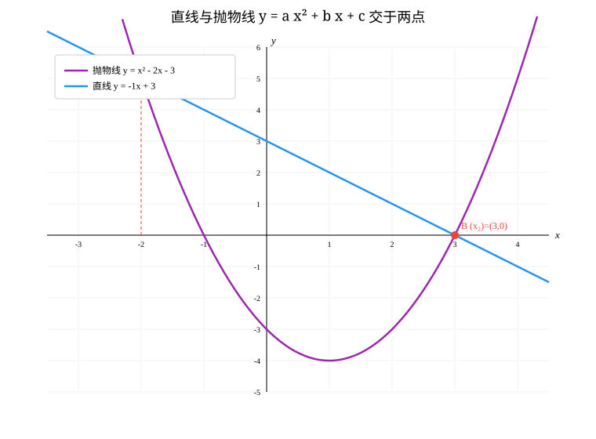
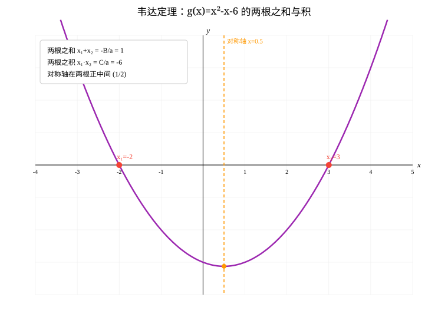
两交点定直线（y = a x^2 + b x + c）：
y = [a(x1+x2) + b]·x + (c - a·x1·x2)
韦达定理（a x^2 + B x + C = 0）：
x1 + x2 = -B/a x1·x2 = C/a
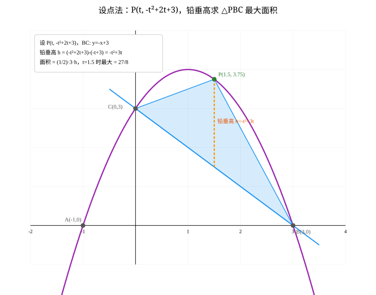
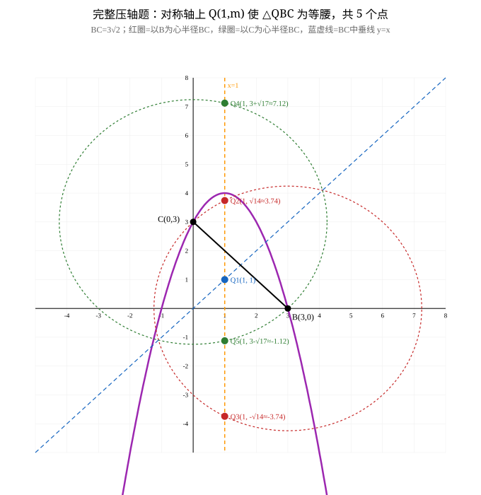
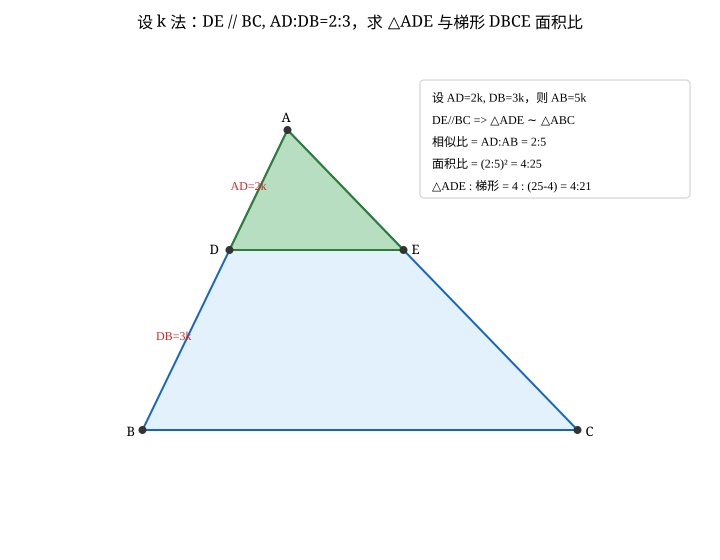
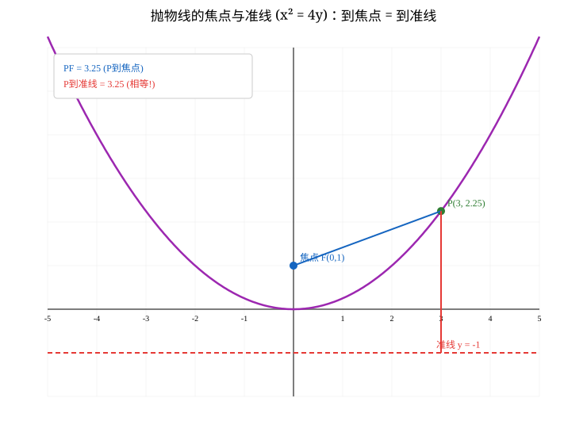
极坐标 (r, θ) 是高中内容，但其灵魂「用距离+角度定位点」在初中就是解直角三角形：x = r·cosθ, y = r·sinθ。
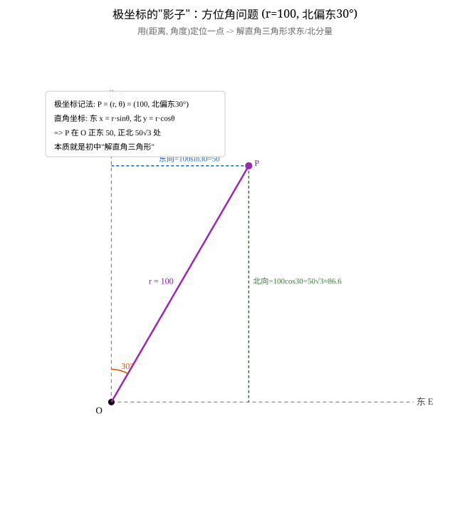
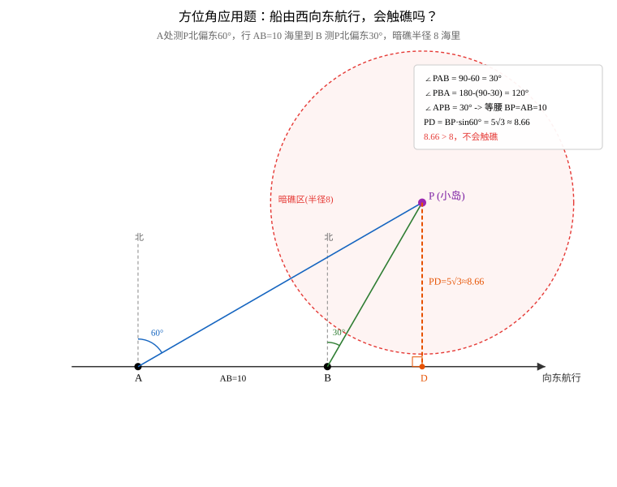
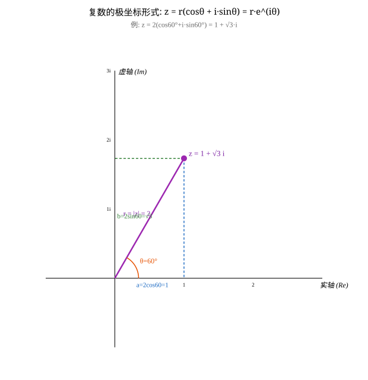
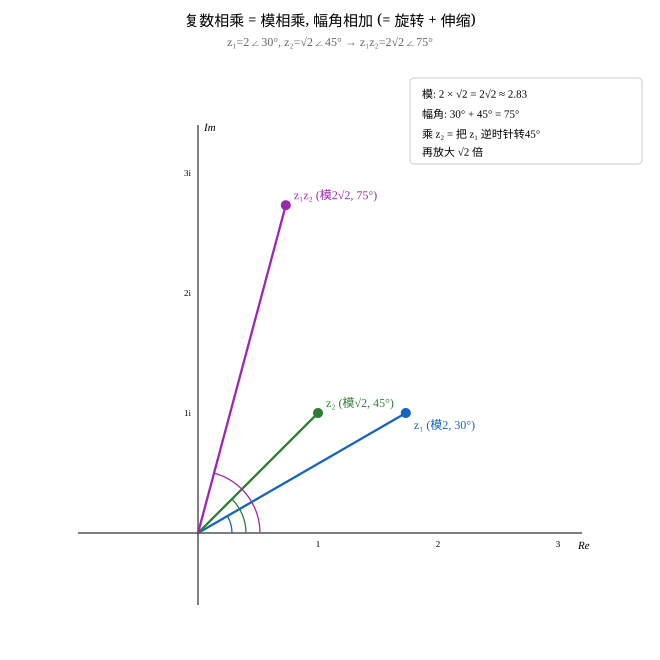
极坐标形式：z = r(cosθ + i·sinθ) = r·e^(iθ) 棣莫弗：[r(cosθ+i sinθ)]^n = r^n (cos nθ + i sin nθ) 欧拉公式：e^(iθ) = cosθ + i·sinθ
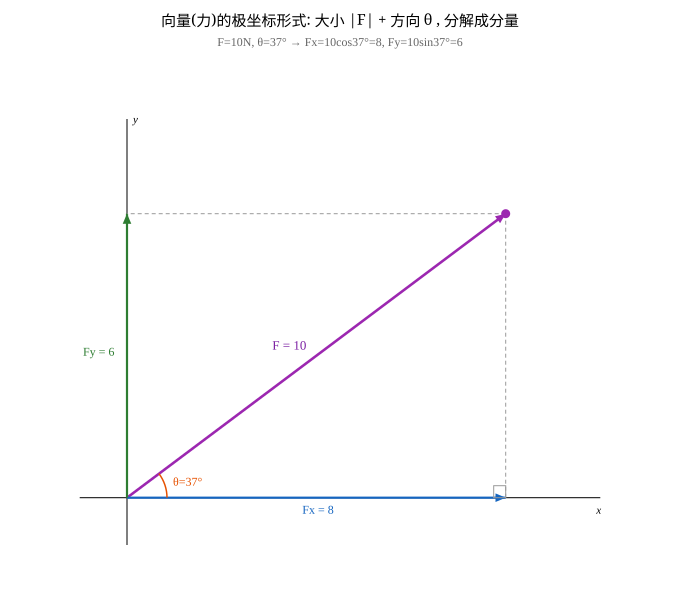
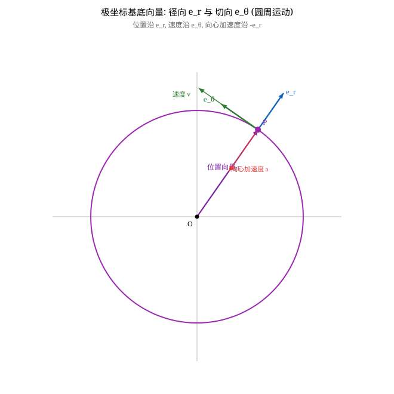
斜坐标系 = 用两个不垂直的基底 e1、e2 给平面定坐标（理论基础：平面向量基本定理）。
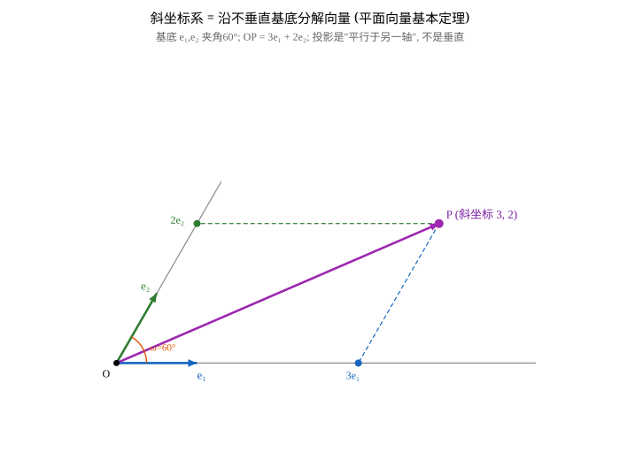
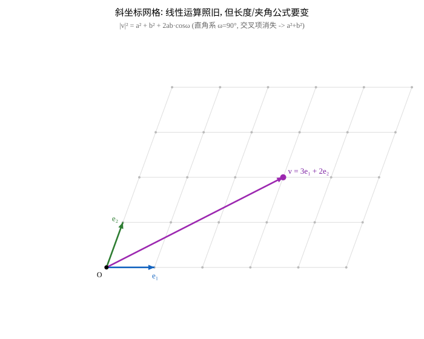
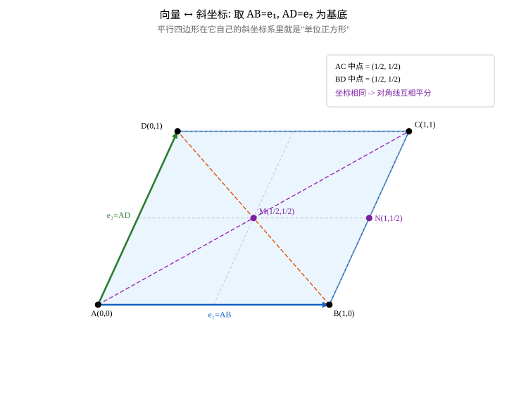
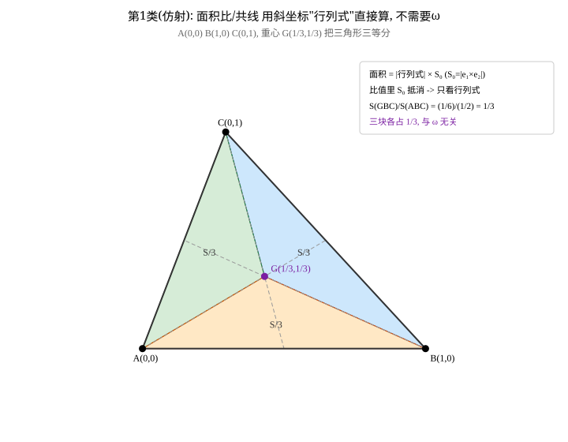
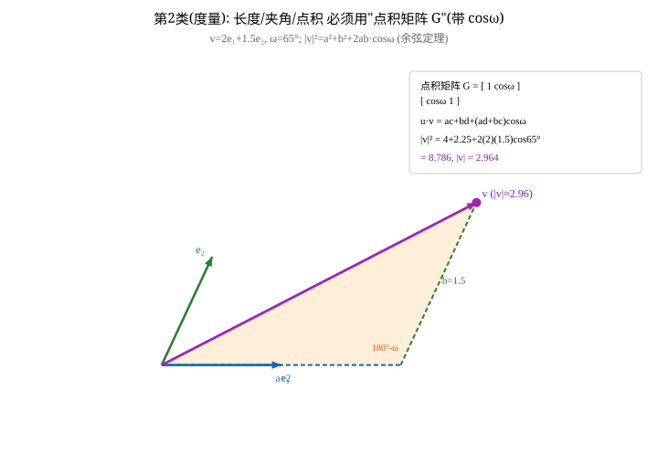
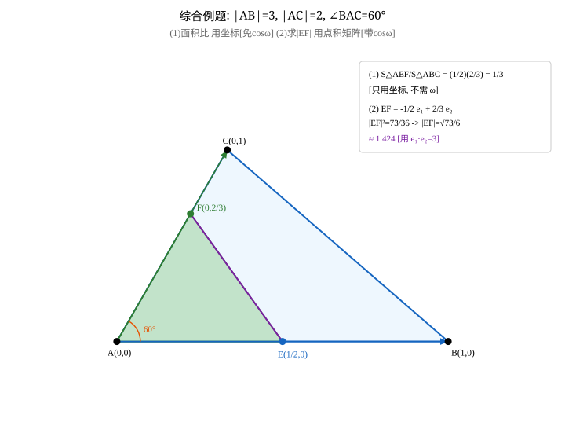
仿射类（免 cosω，斜坐标可照搬直角系）： · 直线方程 ax+by+c=0 · 共线判断 ad - bc = 0 · 面积比 = 行列式之比 · 取边为基底做坐标化 度量类（必须用点积矩阵 G，带 cosω）： · G = [[1, cosω],[cosω, 1]]（单位基底） · u·v = ac + bd + (ad+bc)·cosω · |v|^2 = x^2 + y^2 + 2xy·cosω 口诀：问「在不在线上/占多少比例」→ 用坐标；问「多长/多少度/垂直」→ 用 G。
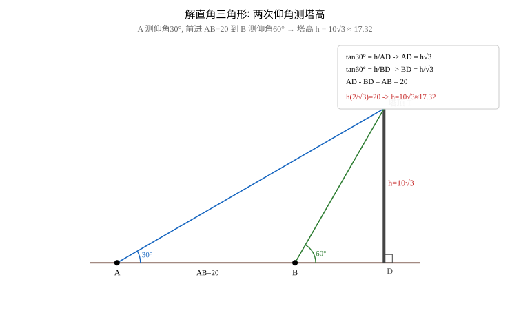
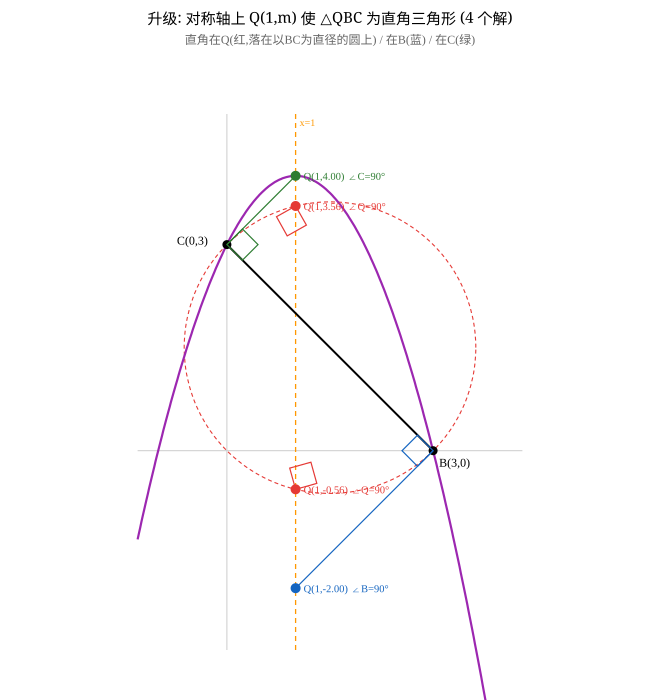
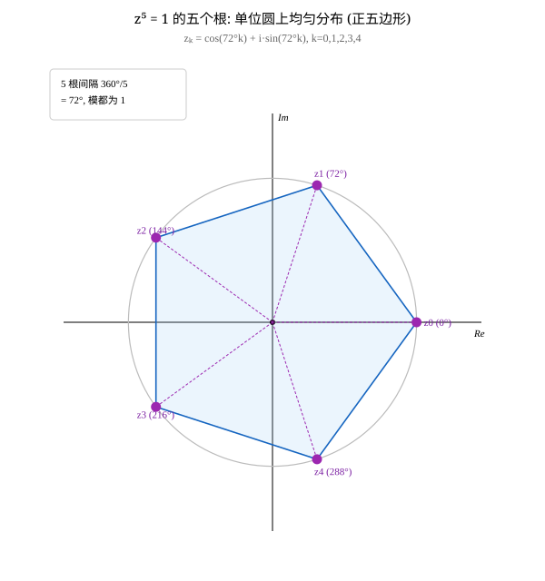
等腰三角形：按「哪两条边相等」分类（距离相等 / 平方相等） 直角三角形：按「直角顶点是谁」分类（向量数量积 = 0）
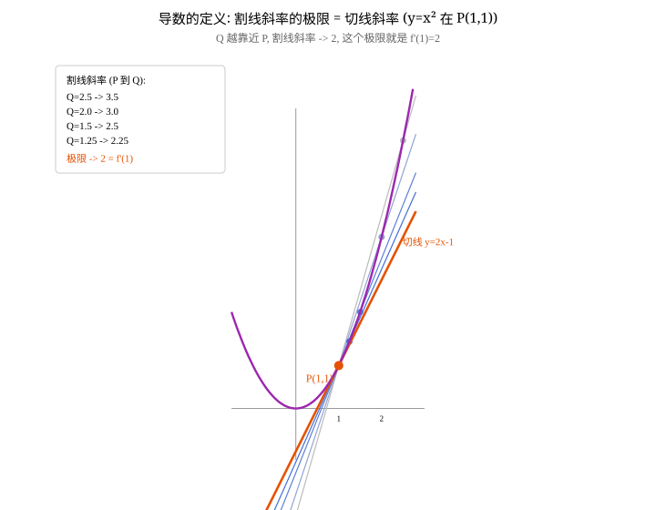
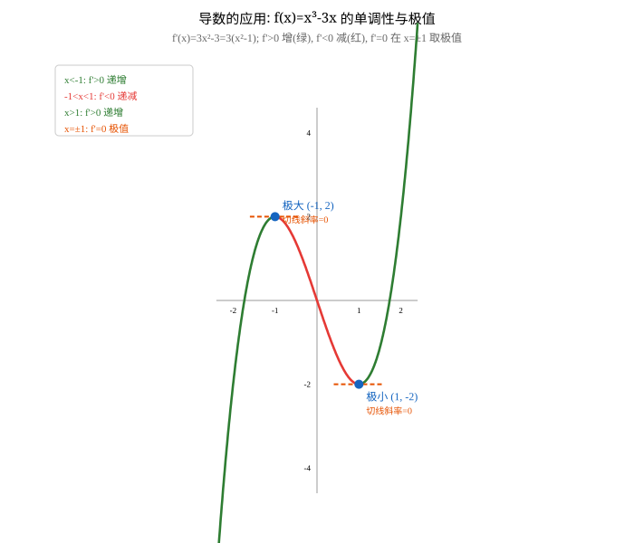
导数 f'(x) = lim(h→0) [f(x+h)-f(x)] / h （割线斜率的极限） 几何意义：f'(x) = 曲线在 x 处切线的斜率 常用公式：(x^n)' = n·x^(n-1)，(C)'=0，(sin x)'=cos x，(cos x)'=-sin x 求极值三步：1) 求 f'(x) 2) 解 f'(x)=0 3) 看两侧 f' 正负（增→减极大，减→增极小）
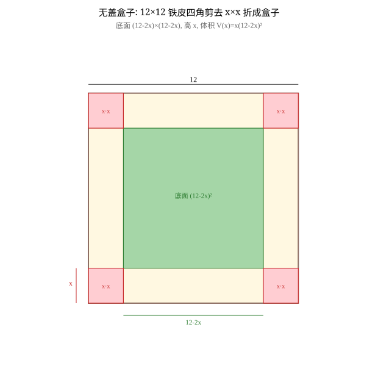
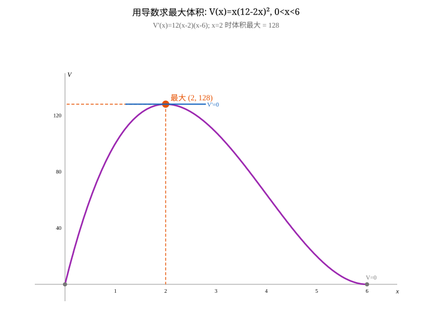
优化套路四步： 1) 设变量，写目标函数 + 定义域（带不等式限制，本题 0<x<6） 2) 求导 → 令 f'=0 → 解候选点，剔除定义域外（x=6 舍） 3) 用导数符号判定：先增后减为极大/最大 4) 代回算出最优值并回答实际问题 适用：用料最省、利润最大、容积最大、路程最短 等一大类问题